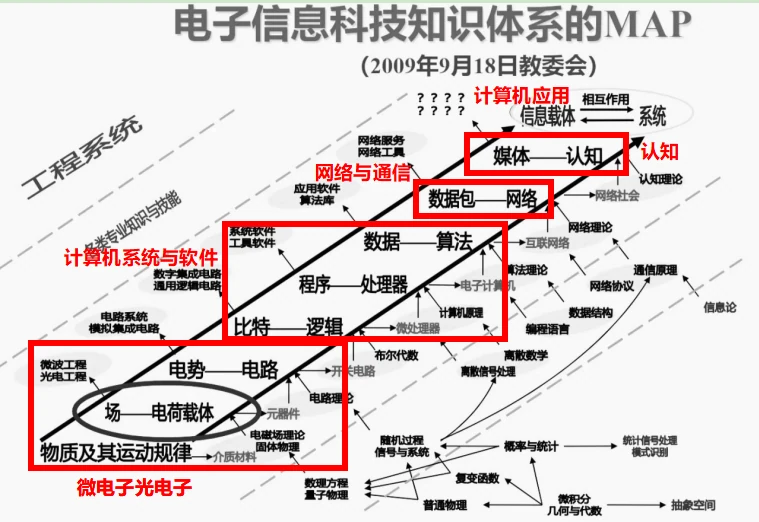

从创新与人才培养方面突破中国电子信息工程科技发展“五大挑战”调研报告
2023年清华大学学生社会实践品牌项目调研报告
从创新与人才培养方面突破中国电子信息工程科技发展“五大挑战”调研报告
内容摘要：党的二十大提到提升科技自立自强能力是未来五年全面建设社会主义现代化国家的主要任务之一。目前，我国电子信息行业面临“中国电子信息工程科技发展十三大挑战（2022）”（以下简称“十三大挑战”），严重阻碍我国电子信息行业的发展，且目前国内缺少相应的系统应对方法的文献。第十期电子系品牌项目“E方水土”从“十三大挑战”中与电子系本科生专业知识紧密联系的五大挑战（以下简称“五大挑战”）入手，依托支队实践调研等方法创造性地从创新方法与人才培养方面总结提炼出应对“五大挑战”的可行性方法，包括技术创新、模式创新、集群效应和跨界融合四大创新维度，并分别为高校、企业和政府人才培养提出针对性建议，为突破中国电子信息工程科技发展的“五大挑战”做出实际贡献。
关键词：技术创新 模式创新 集群效应 跨界融合 “十三大挑战”
第十期“E方水土”品牌项目结合电子系本科课程体系，选择了微电子光电子领域、网络与通信、认知、计算机系统与软件和计算机应用五个与电子系本科生课程关系最紧密的方向进行实践调研。第十期“E方水土”品牌项目出行10支支队，包括7支国内支队和3支海外支队，分别前往深圳、成都、西安、沈阳、武汉、南京、上海、敦煌等地实地探访，国外支队前往日本、英国和以色列交流学习，分别前往对应挑战领域开展调研，通过与企业和高校交流座谈，汲取国内外优秀企业和高校的创新发展模式和人才培养经验，探索破解“五大挑战”的方法，为推动我国电子信息领域发展提出可行性建议。
调研背景
2022年10月，习近平总书记在党的二十大报告中提到，“未来五年是全面建设社会主义现代化国家开局起步的关键时期”，“科技自立自强能力显著提升，构建新发展格局和建设现代化经济体系取得重大进展”将是我国未来五年的主要发展目标之一。提升我国科技自立自强水平，加快推进科技强国战略，对我国全面建设社会主义现代化国家具有重要意义。
在电子信息领域，中国工程院信息与电子工程学部、中国信息与电子工程科技发展战略研究中心在京发布“中国电子信息工程科技发展十三大挑战（2022）”，总结提炼出中国电子信息工程科技当前的发展趋势和面临的重大挑战。这些挑战包括：信息领域的自主可控，实现超高速、高性能、低功耗、多功能、高密度光电子器件，研发出基于新一代信息技术的智能化管控系统和智能化工业软件，研发软件定义、软硬协同、场景驱动、应用感知、智能赋能的基础软件等。具体领域为信息领域、微电子光电子、光学工程、测量计量与仪器、网络与通信、网络安全、水声工程、电磁场与电磁环境效应、控制、认知、计算机系统与软件、计算机应用和应对重大突发事件。
电子系的本科课程培养方案于2009年通过最新改革方案，涵盖软件和硬件两大模块，并与“十三大挑战”的部分领域相吻合。其中固体物理课程与微电子光电子相吻合，数字逻辑与处理器基础、电子电路与系统基础、数据与算法课程、计算机程序设计基础课程与计算机系统与软件相吻合，通信与网络、信号与系统课程与网络与通信相吻合，媒体与认知与认知和计算机应用相吻合，为支队开展相应方向的实践活动奠定了坚实基础。

二、实践选题与意义
对于“五大挑战”，目前国内相关文献大多集中于离散领域，方法各异且不具有普适性，缺少系统性方法性的针对性应对建议。第十期“E方水土”品牌项目就这“五大挑战”展开调研，组织国内和海外实践共计10支支队前往对应挑战领域国内外前沿企业和高校，学习国内外优秀企业和高校的创新与育人模式，并在实践后召开支队交流会，充分总结并提炼支队成果，就创新和人才培养方面创造性地整合提出了可行性建议，助力我国电子信息行业破除挑战，推进我国科技自立自强发展。
、微电子光电子
1.领域背景
境外和国际上3nm制程有望今年推出，2nm制程也已列入研发计划。先进芯片工艺日益趋近物理极限，涉及设计到制造产业链关键环节，如设备、材料、EDA/IP核等基本被国际大企业垄断。国内企业创新能力提升面临重大挑战。新器件、新结构、新材料、新工艺、新封装等技术协同创新推进产业化，是应对微电子领域挑战的重要技术途径。实现超高速、高性能、低功耗、多功能、高密度光电子器件是信息光电子领域面临的重要挑战，发展光子集成、光电集成和光电融合等技术是应对信息光电子领域挑战的重要技术途径。
实践地背景
西安在电子信息产业发展深耕多年，在龙头企业的带动下，西安电子信息产业呈现出快速增长态势，电子信息产业链条逐步完善。近年来，西安以产业园区为载体，打造半导体、集成电路自主创新和技术转化平台，发挥产业集群效应，推动西安电子信息产业的持续“快跑”，加速形成了一定规模的产业聚集。如今，西安已汇集了中兴、华为、三星、奕斯伟等国内外行业巨头，形成了通信设备、电子元器件、集成电路、智能终端、软件与信息服务等多个优势产业集群。
南京区位优势明显，科教资源丰富，产业体系完备，集成电路产业增长速度较快、发展势头良好，聚集了集成电路相关企业近六百家，覆盖了从芯片设计、晶圆制造、封装测试、装备材料等的全产业链格局。在集成电路产业布局上，南京已形成了以江北新区、浦口区为核心，江宁区、雨花台区、玄武区、南京经开区各有特色的“一中心、多基地”的产业空间体系布局，被称为中国的“芯片之都”。
、网络与通信
1.领域背景
随着5G移动信息网络的加速构建，5G网络与各行业应用的垂直整合面临较大挑战。6G研发加速布局。互联网作为支撑未来十年全球信息传输基础设施的主导体系架构，面临万物互联、万事互联时代toB、toM、toX、高速核心器件等多样化需求带来的前所未有挑战。在网络流量的爆发式增长、陆海空天全覆盖和“双碳”背景下，网络需满足巨容量、大连接、广覆盖、高可靠、绿色节能、低成本等需求，弹性智能网络架构、服务质量、用户体验、网络安全性和可靠性等是该领域当前面临的重要挑战。
2.实践地背景
上海在全国乃至全世界，率先提出了5G千兆、宽带千兆的“双千兆之城”计划，并将其纳入《上海市信息基础设施能级提升三年行动计划》。如今，上海5G建设已经取得了惊人的建设成果。作为国际化的交通枢纽城市，上海具备“枢纽型、功能性、网络化”的一体化交通体系。上海移动已经将5G网络覆盖到全市及出省交通，打造了长三角一体化的“水上、陆地、地下、空中”三维一体5G广覆盖网。实现了一江一河一湖及海岛的水上全覆盖，包括高架、高铁、高速、街道在内的陆地优覆盖，地下隧道、地铁站厅站台的地下深覆盖，以及机场周边低空航线的空中高覆盖。
、认知
1.领域背景
脑认知与人工智能加速融合，多尺度动态脑观测、针对记忆、情绪、视觉等认知功能的机理揭示，和易泛化、鲁棒性、低功耗的脑启发人工智能理论与模型的建立是当前技术难点；在边缘计算设备、可穿戴设备、高速设备等高速低功耗场景应用需求迫切，打破冯诺依曼计算架构，研制感存算一体、大带宽的新型智能计算器件与系统，是突破当前算力与能效核心瓶颈的重要挑战。
2.实践地背景
沈阳市智能机器人的发展可追溯到上世纪80年代末和90年代初，经历了从开发性基础研究和实验性开发到明确发展方向、工业化生产的发展过程。1999年，国家政府启动“863计划”，沈阳作为重要的科研与制造基地，开始涉足机器人技术研究并参与项目实施。从2000年至今，沈阳的智能机器人产业都处于持续高速发展的阶段，逐步延伸到生产生活的各个领域。截至目前，沈阳已经形成了较为完整的装备制造业体系，奠定了一定的机器人产业先发优势，集聚了一批行业龙头企业。作为我国重要的装备制造业基地，产业转型升级可为机器人产业提供丰富的应用场景——机器人产业已覆盖多方面生产的全链条，上下游配套企业超500家，是目前国内产品线最全的制造基地。
、计算机系统与软件
1.领域背景
当前存在智能计算理论基础不坚实、人网物协同计算范式不成熟、内生安全计算机理不清晰等新型应用带来的对计算理论、机理和方法的挑战，后摩尔时代单位体积和能耗下算力提升困难、单一计算架构难以有效应对计算环境对全场景及不确定性支撑的挑战，以及新型泛在计算基础软件理论与技术的挑战。为此需开展多元计算架构形态研究，深耕量子、类脑、光子等前沿技术，将计算、存储、网络深度融合，在微体系结构、微纳结构、新材料新工艺新器件等方面持续创新，研发软件定义、软硬协同、场景驱动、应用感知、智能赋能的基础软件，这些都是该领域当前面临的重要挑战。
2.实践地背景
成都市电子信息产业在集成电路方面已形成了以微电子为基础、软件为支撑、元器件为配套、网络产品为主体、安全产品为特色、信息家电为外延的产业发展体系。成都高新区在电子信息行业具有明显优势，其中最具代表性的是集成电路、新型显示和智能终端产业。在集成电路领域，成都拥有全球超过一半的英特尔笔记本芯片组封测业务，德州仪器8寸产线也生产世界级的先进模拟半导体产品。在新型显示领域，成都高新区已形成完整的产业生态，拥有从原材料到显示终端的全产业链。智能终端产业在全球产业分工中也占据重要地位，如西门子(成都)工厂、富士康成都科技园等企业表现强劲；也聚集了一批拥有核心技术的电子信息企业，如成都海光、MPS、振芯等设计企业成果全国领先。同时，成都还拥有电子科大通信抗干扰技术国家级重点实验室、华为全球五大研究中心之一的成都研究所等科研单位，光通信实力雄厚，聚集了索尔思、新易盛等光模块上市企业。
、计算机应用
1.领域背景
新时代、新态势、新征程背景下，计算机应用正在迈向新的阶段、催生新的理念、推向新的格局。随着万物互联与智能技术融合程度的不断加深，满足工业、农业、能源、金融、商务、交通、政务、教育、医疗、健康、养老等复杂场景应用需求成为计算机应用技术发展的内在驱动力。通过对复杂场景异构信息系统之间进行功能调用或者交换共享数据，实现系统间数据、信息、知识的互联互通，实现现实世界与虚拟世界的新型虚实相融，将越来越重要。技术发展如何与经济社会复杂场景应用相融合是该领域当前面临的重要挑战。
2.实践地背景
深圳，作为中国改革开放的重要窗口和经济特区之一，自改革开放以来经历了惊人的发展。深圳不仅是中国经济腾飞的缩影，也是中国改革开放的重要象征。深圳作为我国较早从事无人机产品生产和技术研发的城市，具有着完整的无人机产业链条。
智慧城市(Smart City)起源于传媒领域，是指在城市规划、设计、建设、管理与运营等领域中，通过物联网、云计算、大数据、空间地理信息集成等智能计算技术的应用，使得城市管理、教育、医疗、房地产、交通运输、公用事业和公众安全等城市组成的关键基础设施组件和服务更互联、高效和智能，从而为市民提供更美好的生活和工作服务、为企业创造更有利的商业发展环境、为政府赋能更高效的运营与管理机制。
杭州市上城区被选入2012年首批国家智慧城市试点名单，随即在2013年，杭州市拱墅区、杭州市萧山区也被列入该名单，由此可预见，杭州市作为中国智慧城市建设“元老级”的城市，其智慧城市建设发展时间长，对杭州的各行各业产生深远的影响。
敦煌石窟的数字化保护是从1980年代开始的。自那个时期始，科学保护敦煌石窟开始提上日程。由于技术条件的限制，敦煌石窟的保护主要从石窟遗址的自然状况和开放管理两个方面开展工作，一方面是石窟遗址和自然环境的监测与研究，另一方面是洞窟的开放和管理。石窟遗址和自然环境的监测与研究主要分为石窟遗址和其自然环境现状的监测以及病害原因探索和治理这两方面。就自然环境监测与研究来说，敦煌研究院在莫高窟区设置了全自动气象站，同时采用了半自动和自动装置对洞窟的小环境进行了长期和短期的监测，同时对水文地质、工程地质、壁画和彩塑的材料进行了相近的分析。就病害原因的探索和治理来说，敦煌研究院不断探索病害产生的原因，并对修复材料进行了研究。
成果与建议
成果与建议部分将根据各支队的调研成果，提出技术创新、模式创新、产业链创新和跨界融合四大创新维度，并对企业、高校和政府就人才培养方面提出针对性意见，提出应对“五大挑战”、推动创新和人才培养的有效方式。
、创新维度
1.技术创新
技术创新即企业加大研发力度，引进或培养更多专业人才或核心技术，鼓励研发突破瓶颈难题，通过改进旧技术或研发新技术实现技术创新与突破。
具体来说，技术创新可以表现在：（1）改进工艺。目前的企业研究重点主要在于工艺上的改进，加强科研团队的建设和人才培养，提高工艺水平。（2）鼓励企业加大技术研发投入。通过政策引导、财政支持等方式，鼓励企业加大对技术研发的投入力度，提高企业的技术实力和自主创新能力。
以无人机行业为例，无人机的航程和续航能力是影响其应用范围和效能的重要因素。目前的无人机产业通过优化电池技术、改进动力系统和采用节能技术等手段，不断延长无人机的飞行时间和作业范围；同时进一步加大技术研发投入，无人机的航程和续航能力将得到进一步提升，为更广泛的应用场景提供支持。
2.模式创新
模式创新包含工艺模式创新和发展模式创新。其中工艺模式创新即引入智能化和自动化生产技术，利用先进的人工智能解放生产力，提高生产效率；发展模式创新即规模不同的企业应当充分发挥自身优势，因地制宜找到一条适合自身发展的独特道路。
工艺模式创新方面，目前人工智能的广泛应用，加速了智能化的普及。通过应用人工智能技术实现智能化生产、智能化管理等，可以显著提高生产效率和产品质量。此外，还可以将人工智能技术与集成电路行业的其他领域相结合。生产流程的自动化和智能化可以提高生产效率和产品质量；企业管理的智能化可以提高企业的管理效率和决策水平；企业服务的智能化和个性化能提高用户体验和服务质量。
发展模式创新方面，对于大型企业，可以选择采用以下发展模式。垂直整合：大型企业往往拥有自己的研发、生产和销售团队，实现了垂直整合，以提高生产效率和产品质量。国际合作：与国际企业建立合作伙伴关系，共同开发市场，提供创新解决方案，并进一步扩大了市场份额。拓宽业务范围：大型企业有足够的能力拓宽业务领域，如新松机器人除拥有工业机器人、移动机器人、特种机器人三大核心产品外，在服务机器人、洁净机器人等领域也有涉猎，产品种类多，业务广泛。
而对于小型企业，则可以采用不同的策略来生存和发展。小公司通常侧重于创新和差异化，致力于开发独特的产品或解决方案，以满足特定市场需求。如奇辉机器人专注于铁路装备智能化，并走在了行业的前列。
3.产业链创新
产业链创新即将产业各环节的企业联合起来，构建大型产业园区，利用龙头企业带动其它产业的发展，同时利用集群效应推动整个产业链发展。
龙头企业带动园区型集群式发展模式是产业链创新的重要特点。龙头企业往往具有深厚的专业经验基础和经济基础，在相关领域取得突出创新成就。龙头企业的“强磁场”带动与辐射，有利于吸引更多关联企业聚集与合作，吸引更多人才与资金投入，有力推动产业链进一步完善、创新科研成果大量产出以及形成大规模科技生产基地。“通过一个企业，壮大一个产业”的现实在西安得到鲜明体现。近年来，西安以产业园区为载体，积极打造打造半导体、集成电路、软件与信息服务自主创新和技术转化平台，发挥产业集群效应，使得企业之间可以进行资源共享、技术合作，提高了整体的竞争力。
产业集聚效应可以为产业发展带来了以下优势。规模经济与范围经济效应带来的成本优势：企业在一定区域内相互临近,或同时处于生产链的某一个环节而分工不同，从而降低了成本，如运输成本。促进分工与合作：在一定区域内集聚，能够更好的发现各个企业的比较优势，从而形成纵向与横向的协作，促进规模经济发展和产业结构升级，提高资源的利用效率。享有区域与品牌优势：由于一个区域在某些方面或品牌做的比较出色，从而提高了整体的知名度、提升了整体的企业形象，能够吸引消费者来此地区购买商品，同时由于地区集聚的诸多便利条件，也会吸引投资商前来投资。
4.跨界融合
跨界融合是当前产业发展的趋势之一，即推动电子信息行业与其他产业领域进行深度融合，如汽车电子、智能家居、物联网等，通过跨界合作，推动产业的协同创新和升级。
通过与其他产业领域的合作，共同研发新技术、新产品和新服务，可以推动产业的跨界融合和创新发展。例如华为与智能汽车厂商的合作，小米与家电厂商的合作，思特威与国家监控体系的合作。同时，通过不同产业的信息共享和资源整合，实现产业间的资源优化配置和协同发展，可以有效提高产业的效率和竞争力。通过相关企业的合作，也可以共同推进电子信息技术的研发和应用，提高中国电子信息行业的国际竞争力。例如思特威的CMOS图像传感器与追觅的合作，华为与京东方的合作。
（二）、人才培养
人才培养将从企业、高校和政府三个方面入手，需要三者共同发力，相互联合，才可以培养出符合行业发展需求的人才。
1.企业方面
对于企业，为了吸引满足自己产业发展需求的专业人才，需要建立科学的工作模式和正向的企业文化。
企业需要优化考评模式，应当更加注重工作效率，摒弃不科学的内卷式工作考评模式，为员工创造合理平衡的工作与生活安排，才能更大限度地激发员工潜能，充分发挥人才作用。以英国企业为例，英国企业对于员工的自由满足度很高，在企业中拥有着大量的研讨间、静音室，允许员工根据自身需要弹性工作，与自由相伴的，是对员工创造力的要求，英国科技企业都很强调创造力和工作效率，在此环境下员工之间的竞争和国内相比更少，关系也更为简单。此外，英国的工作时间远远小于国内的科技公司。在英国并不存在类似于“996”的现象，反之，通常下午5点到6点，英国人便结束了一天的工作。在和企业中员工交流时获知，在英国，打工人想要加班，需要和主管申请，提出自己加班的必要性，得到主管同意后方能获取进入大楼的许可。与国内相比，英国工作者更加注重工作与生活的平衡，此外，全年的法定休假时间比中国要多很多。
企业文化是企业的灵魂，对于企业发展和吸引人才方面有重要作用。以日本罗姆公司为例，罗姆公司的企业目的是“我们始终把产品质量放在第一位。无论遇到多大的困难，都将为国内外用户源源不断地提供大量优质产品，并为文化的进步与提高作出贡献。”他们自己经营一整条产业线，从晶圆制造到芯片封装，以确保当自己的产品出现问题时，可以准确溯源到出现问题的环节。虽然这种模式可能并不利于公司进一步发展规模，但可能确保对于自己产品的完全掌控。这种提高品控，对自己产品负责的精神是值得我们国内企业进一步学习的。除此之外，罗姆公司的企业目的还包括“为文化的进步与提高作出贡献”。罗姆公司会在各个学校捐助罗姆楼，甚至遭受08年金融危机时，宁可裁员也要保交楼，同时还会设立艺术专项基金，赞助年轻音乐家。山崎马扎克公司也会将工厂改造为机床博物馆，起到对社会的科普作用，会邀请小学生参观机床博物馆。同时，日本的企业也非常喜欢强调SDG（sustainable development goal，可持续发展目标）这一概念，国内企业也有很多很好的承担社会责任的尝试，比如阿里的蚂蚁森林等等，未来也希望国内能有更多企业承担起与其发展规模相配的社会责任。
2.高校方面
高校作为人才培养的中坚力量，应当培养更加符合国家和行业要求的人才，可以通过优化考评制度和加强校企联合提高人才与行业发展的契合度。
高校可以尝试进一步优化对于本科生和对于研究人员的考评模式，使得学生和研究人员更加专注于解决国家和行业发展的切实问题中。对于本科生的考评模式，可以尝试以绝对分数作为考核评价指标。伦敦国王学院是英国高校较为典型的代表，在成绩评定上，与国内60-90分的及格-优秀线不同，KCL在较大考试难度的前提下设置40-70分的及格-优秀线，课程给分也是参考绝对分数，而非优秀率限制和排名，按照绝对成绩将学生分为first class, upper/lower second class, third class 和ordinary degree, 弱化了同学间的竞争关系。这种机制在激励学生们认真学习的同时，有效避免了成绩内卷的现象。
对于研究人员的考评模式，可以尝试采用更加多元专业的考评模式。以日本为例，日本高校教师的考评由高校与第三方机构共同进行。这些提供评价服务的第三方机构既不属于学校，也不隶属于日本文部科学省，而与双方保持合作关系。日本高校对科研人员的论文数量要求相对宽松，与之相对的，日本高校将科研成果的实际转化程度以及社会贡献指数作为绩效考评指标。这种多元化、综合化的评价方式意在摆脱量化指标的束缚，更突出对科研成果实际质量的要求，避免了重数量轻质量的弊病。日本高校多元化、专业化的考评制度在一定程度上弥补了科研成果难以量化的问题，这对我国许多陷入“唯论文论”“论文注水”问题的高校提供了良好的借鉴。同时，引进第三方专业评价机构，能在确保评价结果专业性的同时，保证评价结果的独立客观。
同时高校应当主动加强校企联合，通过与企业的加强交流与联合培养，可以创造出更加符合产业发展的人才，更加满足行业发展需求。学术界和产业界的结合应当更加平等。工业界的需求往往是一些实际利益相关但是无法有足够学术资源进行突破的地方，这恰恰是高校能够进行研究并且解决的问题。学术界可以主动了解产业界的问题，再进行科学或工程研究，进而促进产业界的变革。高校可以通过培养学生科研兴趣、构建多元化的研究方向，扩展了学生们对于顶层架构的认知，帮助他们了解业界需求，极大程度上为电子信息产业的企业输送人才；采用“晚期专业化”和“早期暴露”策略，也可以给给学生们提供广阔的学术视野和培养学生动手能力。
3.政府方面
政府应当为企业提供更多利好政策，构建鼓励探索、鼓励创新的社会氛围和政策环境，同时也需要勇于鼓励长期性的科研实验，鼓励工匠精神。
科技发展需要鼓励探索、鼓励创新的社会氛围。以以色列为例，以色列诞生了多位诺贝尔奖获得者，他们在农业、医药和国防领悟的成就帮助以色列在并不富饶的国土上站稳脚跟并迅速发展，以色列理工大学的教授谈及了创新创业需要的九点要素：领导力、远见、资金、技术、团队、市场、战略、敏捷性以及“虎次怕”（Hutzpah），他通过实例解释了每一个要素，尤其是对于“虎次怕”，这是指企业家们不怕失败、坚持自己的精神，这种精神和以色列“接纳失败的社会氛围”共同塑造了以色列的企业家精神，使以色列在创新领域多次突破。
科研人才的教育应当更加关注“工匠精神”的培养。某一领域的研究问题往往需要研究人员经年累月、始终如一地耕耘。有时为了解决某个问题，要尝试十个解决方案才能找到合适的方法，需要研究人员保持坚守与探索，即使全部失败，研究人员也不应轻易放弃，而是继续探索下去。这种认真求索、坚守不移的工匠精神对于电子信息行业乃至整个科研领域的发展都有着至关重要的作用。
四、总结
此次调研，支队结合电子系本科课程体系，前往微电子光电子、网络与通信、认知、计算机系统与软件和计算机应用五个与电子系本科生课程关系最紧密的方向进行实践调研，通过与国内外优秀企业和高校的交流，各支队汲取了很多创新发展模式和人才培养经验，创造性地提出了技术创新、模式创新、产业链创新和跨界融合的四大创新维度，并从企业、高校和政府三个维度给出了人才培养建议，为破解“五大挑战”提出了自己的解决方案。未来，电子系“E方水土”品牌实践项目仍将继续关注国家电子信息领域发展状况与挑战，开展更多专业认知实践活动，提高同学们的专业素养和家国责任意识，为破解电子信息行业发展挑战建言献策。